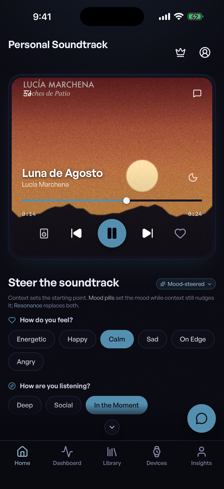

Private beta · payments on a test network
Music that lives on your device and pays artists direct.
Three apps for listeners and artists. No servers in the middle, no platform holding your data, and no one holding the money between you and the artist.
Email us to join the private beta.
contact@jams.community
Tell us whether you listen, make music, or both. One reply, no list.
Runs on your deviceYour library and listening history are stored on your device, not on our servers.
No serversNothing central to breach or switch off.
Your keys, your identityNo platform account to lose.
Never holds the moneyArtist-direct micropayments.
Choose your door
Built for the people on both ends of a song.
Hear more, owe no one your data.
- Jams Player for your whole library
- Personal Soundtrack picks for the moment
- Your money goes to the artist you played
Keep your rights. Keep your fans.
- A verified page that is yours
- Get paid straight to your own wallet
- Talk to listeners without a middleman
Investors & grants
A fairer music economy, already running.
- Three working apps, desktop and mobile
- Privacy by design, not by policy
- Built on open networks
Personal Soundtrack
Set the scene. It finds the song.
Tell it where you are and how you feel, and it picks music that fits the moment, worked out on your phone, not in someone’s cloud.
More about Personal Soundtrack →
Your whole library, and the artists behind it.
Play your own files. When you support an artist, it goes to them, not to us.
More about Jams Player →
Run your music career from your own machine.
Publish a verified catalog, take support straight to your wallet, and keep every right you started with.
More about JamStand →
Provenance
No release anchored yet.
Every release is fingerprinted and anchored in three independent places once one ships. A timestamp proves existence at a date, not authorship; the design lineage is credited in the open.